Most recent recipes
Smoked salmon pasta with sauce vièrge
30 mins
Serves 4
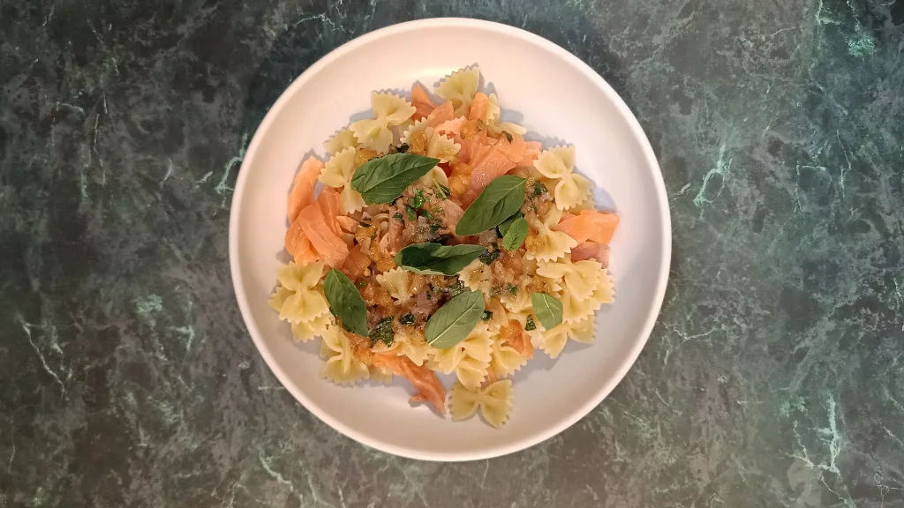
Dak-kkochi with beansprout salad
40 mins
Serves 4
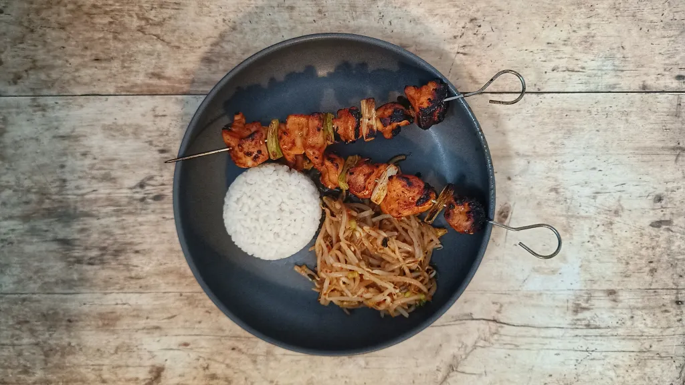
Minty lime bars
55 mins
Serves 16
Pork & mushroom noodles
35 mins
Serves 4
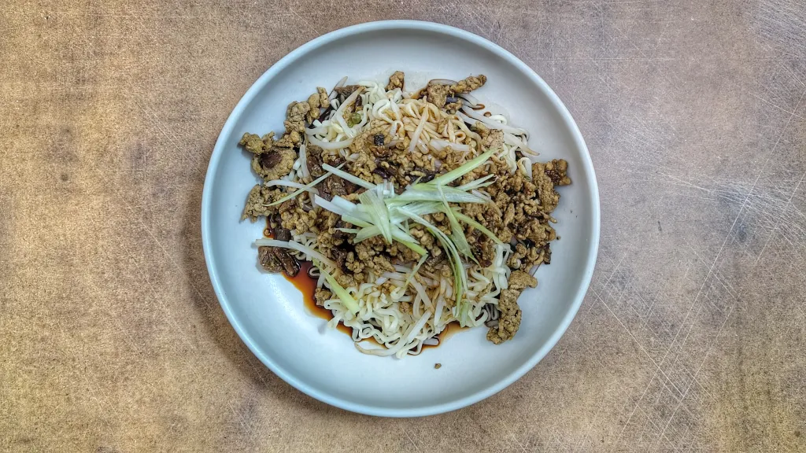
Spiced lamb and apricot wraps
50 mins
Serves 4
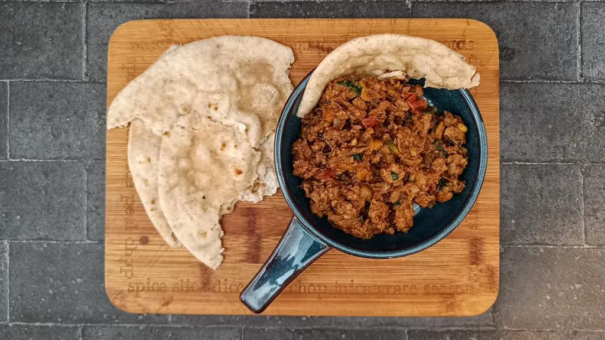
Chicken, coconut and pineapple curry
45 mins
Serves 4
Golden pork stir-fry
20 mins
Serves 4
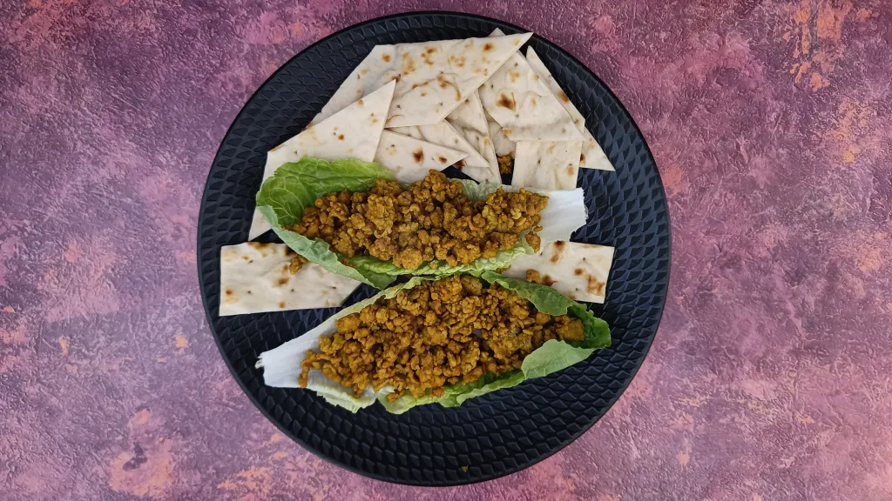
Chicken ramen
40 mins
Serves 2
Keralan monkfish curry with coconut rice
40 mins
Serves 4
Mixed seafood conchiglioni
30 mins
Serves 4
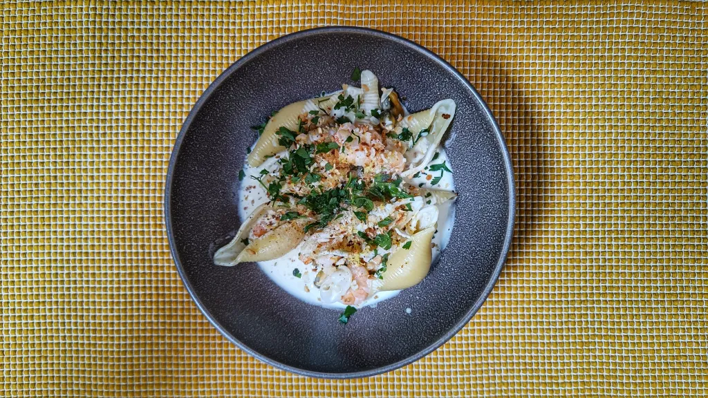
Sparkling gingerbread
1 hr
Serves 8
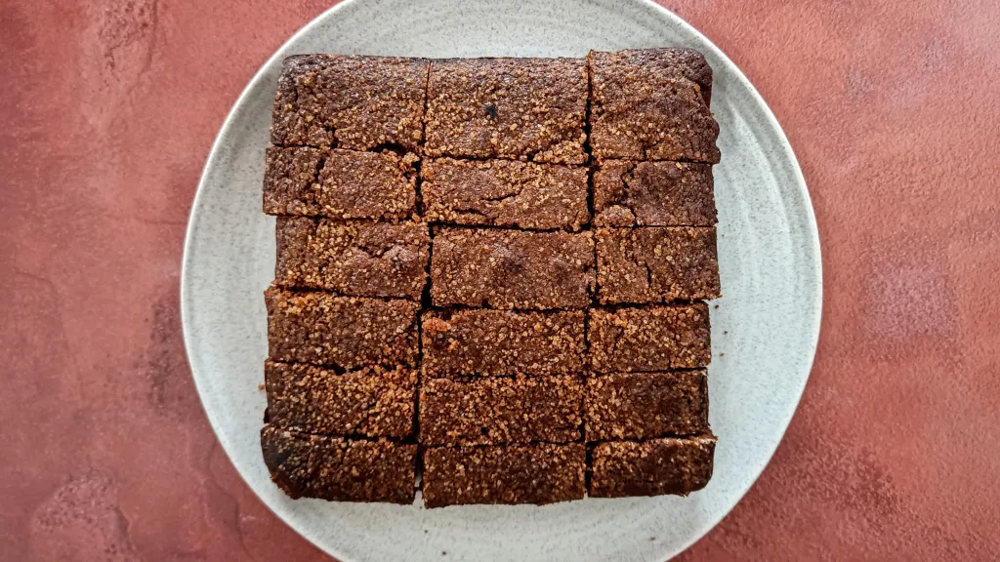
Agra ginger chicken
1 hr 10 mins
Serves 4
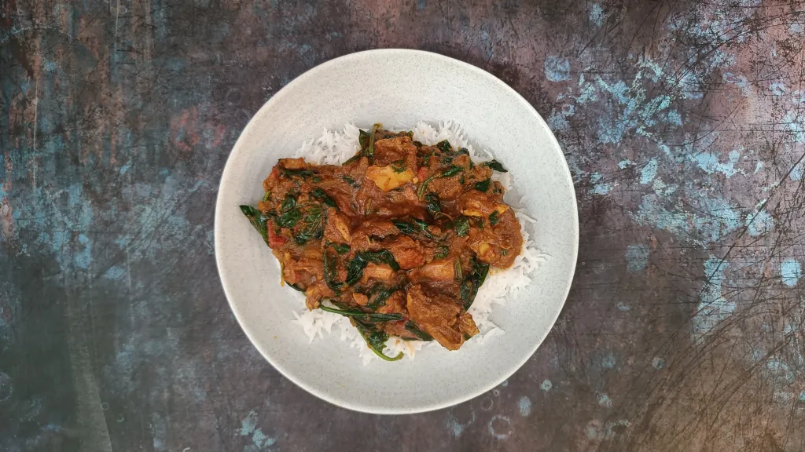
Stuffed pasta bolognese
1 hr 20 mins
Serves 6
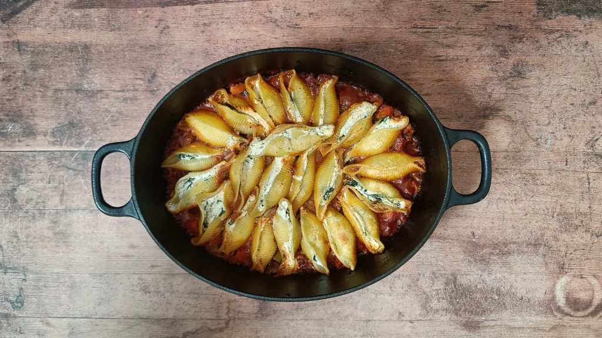
Spinach and rice
50 mins
Serves 4
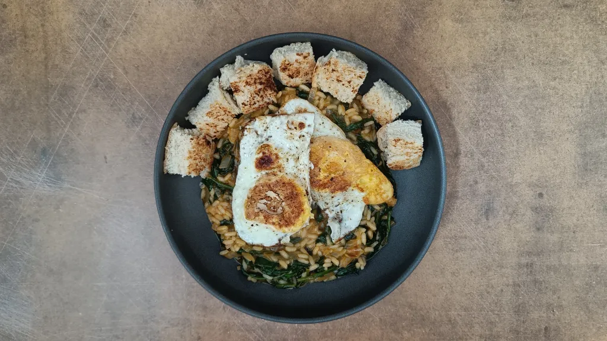
Crispy ginger & chilli pork fried rice
30 mins
Serves 4
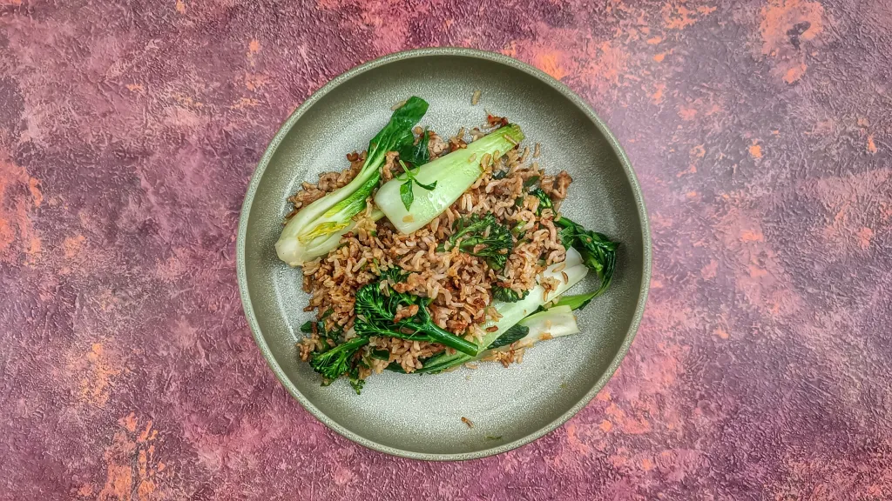